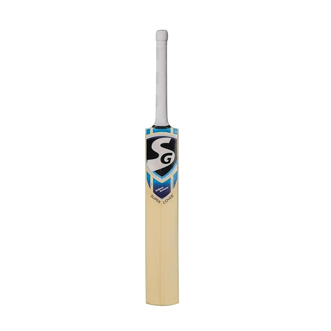
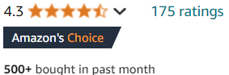

<html></html>
<head>
  <link href="product.css" rel="stylesheet"></link>
</head>
    <div class="grid-container">
        <div class="grid-item"><br></div>
          <div class ="grid-item">
          <h2>₹4,199/-</h2><br>
          Size: short handle<br>
                  Sport: Cricket<br>
                  Brand: SG<br>
                  Material: Wood<br>
                  Colour: multicolour<br>
    </div>

        <div class="grid-item"><br><br> <a href="purchase-form.html">Buy Now</a></div>
          <div class ="grid-item">
          <h2>About this item:</h2><br>
          In Box contents: 1 Cricket Bat with Cover | Material: English Willow | Needs Knocking: Yes | With Cover: Yes | Has Toe Guard: No<br>
Suitable For: Leather Ball | Weight: 1160-1200gm | Sweet Spot: Medium | Spine Profile: Medium<br>
Stretch Mesh Upper with Laser Cut Holes to Enhance Breathability: Made with a highly stretchable yet breathable mesh the upper conforms to the shape of your foot and expands in accordance<br>
world's finest english willow hard pressed & traditionally shaped for superb strokes<br>
Highly Durable Rubber Outsole: Guaranteed long lasting and high mileage running shoes with a run life greater and 500+ miles<br>
         
        </div>
</html>